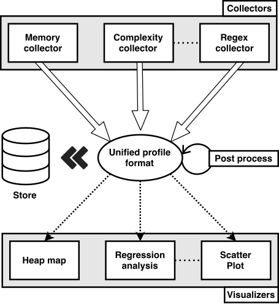

Perun’s Profile Format¶
Supported format is based on JSON with several restrictions regarding the keys (or regions) that needs to be defined inside. The intuition of JSON-like notation usage stems from its human readability and well-established support in leading programming languages (namely Python and JavaScript). Note, that however, the current version of format may generate huge profiles for some collectors, since it can contain redundancies. We are currently exploring several techniques to reduce the size of the profile.
{kind=link}

The scheme above shows the basic lifetime of one profile. Performance profiles are generated by units called collectors (or profilers). One can either generate the profiles by its own methods or use one of the collectors from Perun’s tool suite (see Supported Collectors for list of supported collectors). Generated profile can then be postprocessed multiple times using postprocessing units (see Supported Postprocessors for list of supported postprocessors), in order to e.g. normalize the values. Once you are finished with the profiles, you can store it in the persistent storage (see Perun Internals for details how profiles are stored), where it will be compressed and assigned to appropriate minor version origin, e.g. concrete commit. Both stored and freshly generated profiles can be interpreted by various visualization techniques (see Supported Visualizations for list of visualization techniques).
Specification of Profile Format¶
The generic scheme of the format can be simplified in the following regions.
{
"origin": "",
"header": {},
"collector_info": {},
"postprocessors": [],
"snapshots": [],
"chunks": {}
}
Chunks region is currently in development, and is optional. Snapshots region contains the actual collected resources and can be changed through the further postprocessing phases, like e.g. by Regression Analysis. List of postprocessors specified in postprocessors region can be updated by subsequent postprocessing analyses. Finally the origin region is only present in non-assigned profiles. In the following we will decribe the regions in more details.
- origin¶
{
"origin": "f7f3dcea69b97f2b03c421a223a770917149cfae",
}
Origin specifies the concrete minor version to which the profile corresponds. This key is present only, when the profile is not yet assigned in the control system. Such profile is usually found in .perun/jobs directory. Before storing the profile in persistent storage, origin is removed and serves as validation that we are not assigning profiles to different minor versions. Assigning of profiles corresponding to different minor versions would naturally screw with the project history.
The example region above specifies, that the profile corresponded to a minor version f7f3dc and thus links the resources to the changes of this commit.
- header¶
{
"header": {
"type": "time",
"units": {
"time": "s"
},
"cmd": "perun",
"args": "status",
"workload": "--short",
}
}
Header is a key-value dictionary containing basic specification of the profile, like e.g. rough type of the performance profile, the actual command which was profiled, its parameters and input workload (giving full project configuration). The following keys are included in this region:
The example above shows header of time profile, with resources measured in seconds. The profiled
command was perun status --short, which was broken down to a command perun, with parameter
status and other parameter --short was considered to be workload (note that the definition
of workloads can vary and be used in different context).
- type¶
Specifies rough type of the performance profile. Currently Perun consideres time, mixed and memory. We further plan to expand the list of choices to include e.g. network, filesystem or utilization profile types.
- units¶
Map of types (and possible subtypes) of resources to their used metric units. Note that collector should guarantee that resources are unified in units. E.g. time can be measured in s or ms, memory of subtype malloc can be measured in B or kB, read/write thoroughput can be measured in kB/s, etc.
- cmd¶
Specifies the command which was profiled and yielded the generated the profile. This can be either
some script (e.g. perun), some command (e.g. ls), or execution of binary (e.g. ./out.
In general this corresponds to a profiled application. Note, that some collectors are working with
their own binaries and thus do not require the command to be specified at all (like e.g.
Trace Collector and will thus omit the actual usage of the command), however, this key
can still be used e.g. for tagging the profiles.
- args¶
Specifies list of arguments (or parameters) for command cmd. This is used for more fine
distinguishing of profiles regarding its parameters (e.g. when we run command with different
optimizations, etc.). E.g. if take ls command as an example, -al can be considered as
parameter. This key is optional, can be empty string.
- workload¶
Similarly to parameters, workloads refer to a different inputs that are supplied to profiled
command with given arguments. E.g. when one profiles text processing application, workload will
refer to a concrete text files that are used to profile the application. In case of the ls -al
command with parameters, / or ./subdir can be considered as workloads. This key is
optional, can be empty string.
- collector_info¶
{
"collector_info": {
"name": "complexity",
"params": {
"sampling": [
{
"func": "SLList_insert",
"sample": 1
},
],
"internal_direct_output": false,
"internal_storage_size": 20000,
"files": [
"../example_sources/simple_sll_cpp/main.cpp",
"../example_sources/simple_sll_cpp/SLList.h",
"../example_sources/simple_sll_cpp/SLListcls.h"
],
"target_dir": "./target",
"rules": [
"SLList_init",
"SLList_insert",
"SLList_search",
]
},
}
}
Collector info contains configuration of the collector, which was used to capture resources and generate the profile.
- collector_info.name¶
Name of the collector (or profiler), which was used to generate the profile. This is used e.g. in
displaying the list of the registered and unregistered profiles in perun status, in order to
differentiate between profiles collected by different profilers.
- collector_info.params¶
The configuration of the collector in the form of (key, value) dictionary.
The example above lists the configuration of Trace Collector (for full specification of parameters refer to Overview and Command Line Interface). This configurations e.g. specifies, that the list of files will be compiled into the target_dir with custom Makefile and these sources will be used create a new binary for the project (prepared for profiling), which will profile function specified by rules w.r.t specified sampling.
- postprocessors¶
{
"postprocessors": [
{
"name": "regression_analysis",
"params": {
"method": "full",
"models": [
"constant",
"linear",
"quadratic"
]
},
}
],
}
List of configurations of postprocessing units in order they were applied to the profile (with keys
analogous to collector_info).
The example above specifies list with one postprocessor, namely the Regression Analysis (for full specification refer to Command Line Interface). This configuration applied regression analysis and using full method fully computed models for constant, linear and quadratic models.
- snapshots¶
{
"snapshots": [
{
"time": "0.025000",
"resources": [
{
"type": "memory",
"subtype": "malloc",
"address": 19284560,
"amount": 4,
"trace": [
{
"source": "../memory_collect_test.c",
"function": "main",
"line": 22
},
],
"uid": {
"source": "../memory_collect_test.c",
"function": "main",
"line": 22
}
},
],
"models": []
}, {
"time": "0.050000",
"resources": [
{
"type": "memory",
"subtype": "free",
"address": 19284560,
"amount": 0,
"trace": [
{
"source": "../memory_collect_test.c",
"function": "main",
"line": 22
},
],
"uid": {
"source": "../memory_collect_test.c",
"function": "main",
"line": 22
}
},
],
"models": []
},
]
}
Snapshots contains the list of actual resources that were collected by the specified collector (collector_info.name). Each snapshot is represented by its time, list of captured resources and optionally list of models (refer to Regression Analysis for more details). The actual specification of resources varies w.r.t to used collectors.
- time¶
Time specifies the timestamp of the given snapshot. The example above contains two snapshots, first captured after 0.025s and other after 0.05s of running time.
- resources¶
Resources contains list of captured profiling data. Their actual format varies, and is rather flexible. In order to model the actual amount of resources, we advise to use amount key to quantify the size of given metric and use type (and possible subtype) in order to link resources to appropriate metric units.
The resources above were collected by Memory Collector, where amount specifies the number of bytes allocated of given memory subtype at given address by specified trace of functions. The first snapshot contains one resources corresponding ot 4B of memory allocated by malloc in function main on line 22 in memory_collect_test.c file. The other snapshots contains record of deallocation of the given resource by free.
{
"amount": 0.59,
"type": "time",
"uid": "sys"
}
These resources were collected by Time Collector, where amount specifies the sys time of
the profile application (as obtained by time utility).
{
"amount": 11,
"subtype": "time delta",
"type": "mixed",
"uid": "SLList_init(SLList*)",
"structure-unit-size": 0
}
These resources were collected by Trace Collector. Amount here represents the difference between calling and returning the function uid in miliseconds, on structure of size given by structure-unit-size. Note that these resources are suitable for Regression Analysis.
- models¶
{
"uid": "SLList_insert(SLList*, int)",
"r_square": 0.0017560012128507133,
"coeffs": [
{
"value": 0.505375215875552,
"name": "b0"
},
{
"value": 9.935159839322705e-06,
"name": "b1"
}
],
"x_start": 0,
"x_end": 11892,
"model": "linear",
"method": "full",
}
Models is a list of models obtained by Regression Analysis. Note that the
ordering of models in the list has no meaning at all. The model above corresponds to behaviour of
the function SLList_insert, and corresponds to a linear function of \(amount = b_0 + b_1 *
size\) (where size corresponds to the structure-unit-size key of the resource) on interval
\((0, 11892)\). Hence, we can estimate the complexity of function SLList_insert to be
linear.
- chunks¶
This region is currently in proposal. Chunks are meant to be a look-up table which maps unique identifiers to a larger portions of JSON regions. Since lots of informations are repeated through the profile (e.g. the traces in Memory Collector), replacing such regions with reference to the look-up table should greatly reduce the size of profiles.
Profile API¶
This module contains helper functions for loading and storing of native profiles.
For full specification how to handle the JSON objects in Python refer to Python JSON library.
Profile factory optimizes the previous profile format
In particular, in the new format we propose to merge some regions into so-called resource types, which are dictionaries of persistent less frequently changed aspects of resources. Moreover, we optimize other regions and flatten the format.
- class perun.profiles.native.factory.Profile(*args, **kwargs)[source]¶
- Variables:
- all_filtered_models(models_strategy)[source]¶
The function obtains models according to the given strategy.
This function according to the given strategy and group derived from it obtains the models from the current profile. The function creates the relevant dictionary with required models or calls the responded functions, that returns the models according to the specifications.
- all_models(group='model')[source]¶
Generator of all ‘models’ records from the performance profile w.r.t. Specification of Profile Format.
Form a profile, postprocessed by e.g. Regression Analysis and iterates through all of its models (for more details about models refer to models or Regression Analysis).
E.g. given some trace profile
complexity_prof, we can iterate its models as follows:>>> gen = complexity_prof.all_models() >>> gen.__next__() (0, {'x_start': 0, 'model': 'constant', 'method': 'full', 'coeffs': [{'name': 'b0', 'value': 0.5644496762801648}, {'name': 'b1', 'value': 0.0}], 'uid': 'SLList_insert(SLList*, int)', 'r_square': 0.0, 'x_end': 11892}) >>> gen.__next__() (1, {'x_start': 0, 'model': 'exponential', 'method': 'full', 'coeffs': [{'name': 'b0', 'value': 0.9909792049684152}, {'name': 'b1', 'value': 1.000004056250301}], 'uid': 'SLList_insert(SLList*, int)', 'r_square': 0.007076437903106431, 'x_end': 11892})
- Parameters:
group (
str) – the kind of requested models to return- Return type:
- Returns:
iterable stream of
(int, dict)pairs, where first yields the positional number of model and latter correponds to one ‘models’ record (for more details about models refer to models or Regression Analysis)
- all_resources(flatten_values=False)[source]¶
Generator for iterating through all the resources contained in the performance profile.
Generator iterates through all the snapshots, and subsequently yields collected resources. For more thorough description of format of resources refer to resources. Resources are not flattened and, thus, can contain nested dictionaries (e.g. for traces or uids).
Profile Conversions API¶
Functions for importing ELK profiles.
- perun.profiles.conversions.elk_native.import_elk_from_json(*args, **kwargs)¶
Inner wrapper of the function
Functions for converting folded profiles into Polars profiles.
- perun.profiles.conversions.folded_polars.folded_profiles_to_polars_lf(folded_profiles, postprocess_params, maps)[source]¶
Load folded profile(s) into a Polars LazyFrame according to the parse parameters.
If multiple folded profiles are given, we aggregate them into a single LazyFrame according to the aggregation function specified in the parse parameters.
Note that the returned profile features contain only those features that can be computed cheaply during the parsing.
- Parameters:
folded_profiles (
Sequence[Path]) – possibly a collection of folded profile pathspostprocess_params (
PostprocessParameters) – parsing parameters and configurationmaps (
FunctionMaps) – function maps
- Return type:
tuple[LazyFrame,ProfileFeatures]- Returns:
a (possibly aggregated) LazyFrame and incomplete profile features
Functions for converting native profiles to folded profiles.
- perun.profiles.conversions.native_folded.native_to_folded(profile, profile_key='amount', agg_func=Aggregations.MEDIAN)[source]¶
Transforms the memory or time profile w.r.t. Specification of Profile Format into the folded format used, e.g., by flame graph scripts.
Flame Graph can be used to visualize the inclusive consumption of resources w.r.t. the call trace of the resource. It is useful for fast detection, which point at the trace is the hotspot (or bottleneck) in the computation. Refer to Flame Graph for full capabilities of our Wrapper. For more information about flame graphs itself, please check Brendan Gregg’s homepage.
Example of format is as follows:
>>> print(''.join(native_to_folded(memprof))) malloc()~unreachable~0;main()~/home/user/dev/test.c~45 4 valloc()~unreachable~0;main()~/home/user/dev/test.c~75;__libc_start_main()~unreachable~0 8 main()~/home/user/dev/test02.c~79 156
Each line corresponds to some collected resource (in this case amount of allocated memory) preceded by its trace (i.e. functions or other unique identifiers joined using
;character).- Parameters:
- Return type:
- Returns:
an iterator over folded profile records of (stack_trace, consumption)
Functions for converting native profiles to Pandas representations.
- perun.profiles.conversions.native_pandas.resources_to_pandas_dataframe(profile)[source]¶
Converts the profile (w.r.t Specification of Profile Format) to format supported by pandas library.
Queries through the resources in the profile, and flattens each key and value to the tabular representation. Refer to pandas library for more possibilities how to work with the tabular representation of collected resources.
E.g. given time and memory profiles
tprofandmprofrespectively, one can obtain the following formats:>>> convert.resources_to_pandas_dataframe(tprof) amount snapshots uid 0 0.616s 0 real 1 0.500s 0 user 2 0.125s 0 sys >>> convert.resources_to_pandas_dataframe(mmprof) address amount snapshots subtype trace type 0 19284560 4 0 malloc malloc:unreachabl... memory 1 19284560 0 0 free free:unreachable:... memory uid uid:function uid:line uid:source 0 main:../memo...:22 main 22 ../memory_collect_test.c 1 main:../memo...:27 main 27 ../memory_collect_test.c
- Parameters:
profile (
Profile) – dictionary with profile w.r.t. Specification of Profile Format- Return type:
- Returns:
converted profile to
pandas.DataFramelistwith resources flattened as a pandas dataframe
- perun.profiles.conversions.native_pandas.models_to_pandas_dataframe(profile)[source]¶
Converts the models of profile (w.r.t Specification of Profile Format) to format supported by pandas library.
Queries through all the models in the profile, and flattens each key and value to the tabular representation. Refer to pandas library for more possibilities how to work with the tabular representation of models.
- Parameters:
profile (
Profile) – dictionary with profile w.r.t. Specification of Profile Format- Return type:
- Returns:
converted models of profile to
pandas.DataFramelist
Functions for converting native profiles to Polars representations.
- perun.profiles.conversions.native_polars.native_to_polars_lf(native_profile, postprocess_params, maps)[source]¶
Load and postprocess a Perun profile into a Polars LazyFrame.
The resource consumption for each UID are aggregated into a single value according to the aggregation function specified in the postprocessing parameters.
Note that the returned profile features contain only those features that can be computed cheaply during the parsing.
- Parameters:
native_profile (
Profile) – the Perun profile to convert to Polarspostprocess_params (
PostprocessParameters) – postprocessing parameters and configurationmaps (
FunctionMaps) – function maps
- Return type:
tuple[LazyFrame,ProfileFeatures]- Returns:
a LazyFrame and incomplete profile features structure
Functions for importing Perf profiles as native profiles.
- perun.profiles.conversions.perf_native.import_perf_from_record(*args, **kwargs)¶
Inner wrapper of the function
- perun.profiles.conversions.perf_native.import_perf_from_script(*args, **kwargs)¶
Inner wrapper of the function
- perun.profiles.conversions.perf_native.import_perf_from_stack(*args, **kwargs)¶
Inner wrapper of the function
Functions for converting Polars profiles to folded profiles.
- perun.profiles.conversions.polars_folded.store_polars_as_folded_profile(trace_profile, folded_file, min_width_threshold=0.0)[source]¶
Store a Polars trace profile into a folded profile.
As a by-product, we also compute the maximum length of traces that will be rendered in flamegraphs of this profile given the input width threshold.
- Parameters:
trace_profile (structs.PolarsTraceProfile) – a Polars trace profile
folded_file (TextIO | TempTextIO) – a handle to the output file
min_width_threshold (float) – the rendering threshold for flamegraphs
- Return type:
int
- Returns:
the maximum trace length w.r.t. the filtering threshold
Profile Query API¶
perun.profiles.native.query is a module which specifies interface for issuing
queries over the profiles w.r.t Specification of Profile Format.
Run the following in the Python interpreter to extend the capabilities of profile to query over profiles, iterate over resources or models, etc.:
import perun.profiles.native.query
Combined with perun.profiles.native.factory, perun.profile.conversions and e.g.
Pandas library one can obtain efficient interpreter for executing more
complex queries and statistical tests over the profiles.
- perun.profiles.native.query.all_items_of(resource)[source]¶
Generator for iterating through the flattened items contained inside the resource w.r.t resources specification.
Generator iterates through the items contained in the resource in flattened form (i.e. it does not contain nested dictionaries). Resources should be w.r.t resources specification.
E.g. the following resource:
{ "type": "memory", "amount": 4, "uid": { "source": "../memory_collect_test.c", "function": "main", "line": 22 } }
yields the following stream of resources:
("type", "memory") ("amount", 4) ("uid", "../memory_collect_test.c:main:22") ("uid:source", "../memory_collect_test.c") ("uid:function", "main") ("uid:line": 22)
- perun.profiles.native.query.all_numerical_resource_fields_of(profile)[source]¶
Generator for iterating through all the fields (both flattened and original) that are occurring in the resources and takes as domain integer values.
Generator iterates through all the resources and checks their flattened keys and yields them in case they were not yet processed. If the instance of the key does not contain integer values, it is skipped.
E.g. considering the example profiles from resources, the function yields the following for memory, time and trace profiles respectively (considering we convert the stream to list):
memory_num_resource_fields = ['address', 'amount', 'uid:line'] time_num_resource_fields = ['amount'] complexity_num_resource_fields = ['amount', 'structure-unit-size']
- Parameters:
profile (
Profile) – performance profile w.r.t Specification of Profile Format- Return type:
- Returns:
iterable stream of resource fields key as str, that takes integer values
- perun.profiles.native.query.unique_resource_values_of(profile, resource_key)[source]¶
Generator of all unique key values occurring in the resources, w.r.t. resources specification of resources.
Iterates through all the values of given
resource_keysand yields only unique values. Note that the key can contain ‘:’ symbol indicating another level of dictionary hierarchy or ‘::’ for specifying keys in list or set level, e.g. in case of traces one usestrace::function.E.g. considering the example profiles from resources, the function yields the following for memory, time and trace profiles stored in variables
mprof,tprofandcprofrespectively:>>> list(query.unique_resource_values_of(mprof, 'subtype') ['malloc', 'free'] >>> list(query.unique_resource_values_of(tprof, 'amount') [0.616, 0.500, 0.125] >>> list(query.unique_resource_values_of(cprof, 'uid') ['SLList_init(SLList*)', 'SLList_search(SLList*, int)', 'SLList_insert(SLList*, int)', 'SLList_destroy(SLList*)']
- Parameters:
profile (
Profile) – performance profile w.r.t Specification of Profile Formatresource_key (
str) – the resources key identifier whose unique values will be iterated
- Return type:
- Returns:
iterable stream of unique resource key values
- perun.profiles.native.query.all_key_values_of(resource, resource_key)[source]¶
Generator of all (not essentially unique) key values in resource, w.r.t resources specification of resources.
Iterates through the values of given
resource_keyand yields every value it finds. Note that the key can contain ‘:’ symbol indicating another level of dictionary hierarchy or ‘::’ for specifying keys in list or set level, e.g. in case of traces one usestrace::function.E.g. considering the example profiles from resources and the resources
mresfrom the profile of memory type, we can obtain the values oftrace::functionkey as follows:>>> query.all_key_values_of(mres, 'trace::function') ['free', 'main', '__libc_start_main', '_start']
Note that this is mostly useful for iterating through list or nested dictionaries.
- perun.profiles.native.query.unique_model_values_of(profile, model_key)[source]¶
Generator of all unique key values occurring in the models in the resources of given performance profile w.r.t. Specification of Profile Format.
Iterates through the values of given
resource_keysand yields only unique values. Note that the key can contain ‘:’ symbol indicating another level of dictionary hierarchy or ‘::’ for specifying keys in list or set level, e.g. in case of traces one usestrace::function. For more details about the specification of models refer to models or Regression Analysis.E.g. given some trace profile
complexity_prof, we can obtain unique values of keys from models as follows:>>> list(query.unique_model_values_of('model')) ['constant', 'exponential', 'linear', 'logarithmic', 'quadratic'] >>> list(query.unique_model_values_of('r_square')) [0.0, 0.007076437903106431, 0.0017560012128507133, 0.0008704119815403224, 0.003480627284909902, 0.001977866710139782, 0.8391363620083871, 0.9840099999298596, 0.7283427343995424, 0.9709120064750161, 0.9305786182556899]
- Parameters:
profile (
Profile) – performance profile w.r.t Specification of Profile Formatmodel_key (
str) – key identifier from models for which we query its unique values
- Return type:
- Returns:
iterable stream of unique model key values
Helper Structures¶
Helper structures for parsing, postprocessing, or describing profiles.
- class perun.profiles.structs.PostprocessParameters(hide_generics, squash, squash_regex='.*', **_)[source]¶
Profile postprocessing parameters.
- class perun.profiles.structs.ProfileFeatures[source]¶
A collection of profile features.
- Variables:
total_resources (
int) – the total number of consumed resources.max_trace_len (
int) – the longest seen trace.measured_traces_count (
int) – the number of unique traces that have been measured; this does not include traces that have no measured resource consumption, e.g., sub-traces of recorded traces.measured_functions_count (
int) – the number of unique functions that have been measured in any calling context; this does not include functions that have no measured resource consumption, e.g., functions seen in traces but with no measured consumption.seen_traces_count (
int) – the number of all traces seen in a profile, including those that have no recorded exclusive resource consumption.seen_functions_count (
int) – the number of all functions seen in a profile, including those that have no recorded exclusive resource consumption.
A collection of Polars profile representations and helper structures.
- class perun.profiles.polars.structs.FunctionMaps[source]¶
A collection of mappings between function names and IDs created during parsing of profiles.
The mappings are used to map function names to their IDs and back, which optimizes both memory and time of profile representation and manipulation.
The maps may be reused when parsing multiple profiles (e.g., multiple baseline and target profiles), which leads to faster and easier matching when merging the profiles.
- Variables:
func_id_map (
defaultdict[str,int]) – a mapping of function name -> function IDfunc_id_reverse_map (
dict[int,str]) – a mapping of function ID -> function name; sorted by function IDsquashed_id_map (
dict[int,int]) – a mapping of squashed function ID -> function ID; squashed functions refer to artificial function names representing merged recursive calls, e.g. ‘func{x5}’
- class perun.profiles.polars.structs.PolarsTraceProfile(profile, features, maps)[source]¶
A Polars DataFrame representation of a single profile containing traces (e.g., perf folded).
The profile DataFrame has the following columns: ‘func’, ‘trace’, ‘inclusive’, ‘exclusive’ where ‘func’ is the ID of the last function the trace, ‘trace’ is a semicolon-delimited string of function IDs representing the trace, and ‘inclusive’ and ‘exclusive’ store the resource consumption of the trace.
For example, the profile DataFrame might look like this:
` shape: (369_033, 4) ┌──────┬─────────────────────────────────┬───────────┬───────────┐ │ func ┆ trace ┆ inclusive ┆ exclusive │ │ --- ┆ --- ┆ --- ┆ --- │ │ u32 ┆ str ┆ i64 ┆ i64 │ ╞══════╪═════════════════════════════════╪═══════════╪═══════════╡ │ 8 ┆ 0;3;2;4;5;6;7;8 ┆ 657306 ┆ 657306 │ │ 15 ┆ 0;9;2;4;5;6;10;11;12;13;14;15 ┆ 475601 ┆ 475601 │ │ 27 ┆ 0;17;16;4;5;18;19;20;21;22;23;… ┆ 683530 ┆ 683530 │ │ … ┆ … ┆ … ┆ … │ │ 6201 ┆ 6202;657;658;6186;6187;6200;62… ┆ 1360700 ┆ 1360700 │ │ 453 ┆ 6202;657;658;6186;6187;6203;29… ┆ 78594 ┆ 78594 │ │ 106 ┆ 6202;657;658;6186;6187;6203;29… ┆ 271800 ┆ 271800 │ └──────┴─────────────────────────────────┴───────────┴───────────┘ `- Variables:
profile – a DataFrame representation of a trace profile
features – a set of features describing and summarizing the profile
maps – function maps created during the parsing of the profile